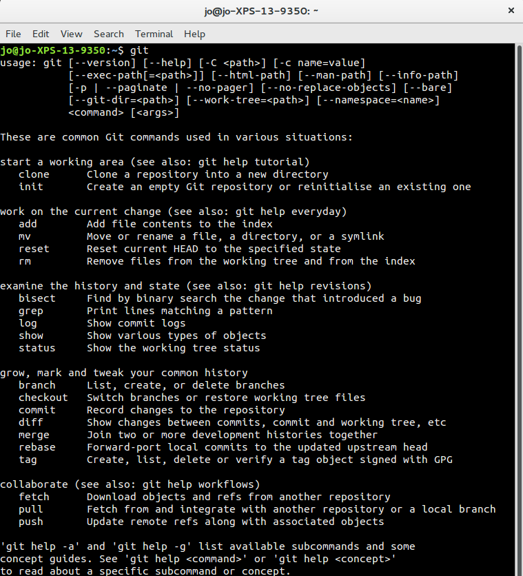

Finding Git once it's installed
Windows
If you installed Git for Windows then in your start menu, under "Git" you will have three options:
- Git Bash- a command prompt that emulates a linux BASH terminal, giving you access to linux commands
- Git CMD- a modified windows command prompt
- Git GUI- a graphic user interface for Git
For the purposes of this workshop you should use Git Bash.
If you installed GitHub Desktop then in your start menu, under "GitHub, Inc" you will have three options:
- Git Shell- a powershell command prompt
- GitHub online support- a shortcut to GitHub Desktop's online support
- GitHub- a graphical user interface for Git
For the purposes of this workshop you should use Git Shell.
Mac
If you're using Git via XCode or GitHub Desktop then start up terminal and type
git
If this doesn't work (for example, if it prompts you to install the XCode developer tools) then close terminal, and in GitHub desktop, go to the preferences, and the advanced tab, and click the button marked "Install command line tools". You should then be able to open terminal and access the git command line as above.
Linux
Open a command prompt and type:
git
Start Git
In every case above, when you arrive at a command prompt, type:
git
You will see an outline of the syntax plus a list of some of the most common commands, with an explanation of their usage.
